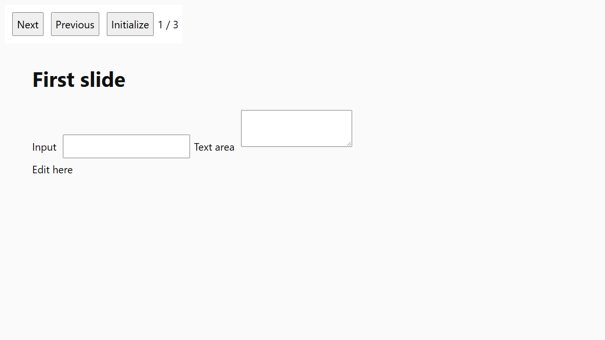
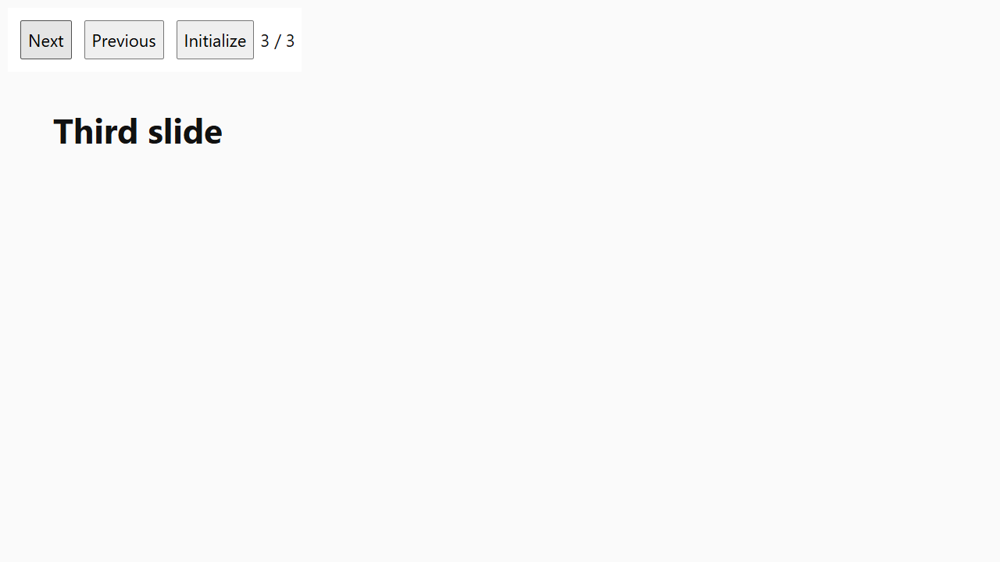
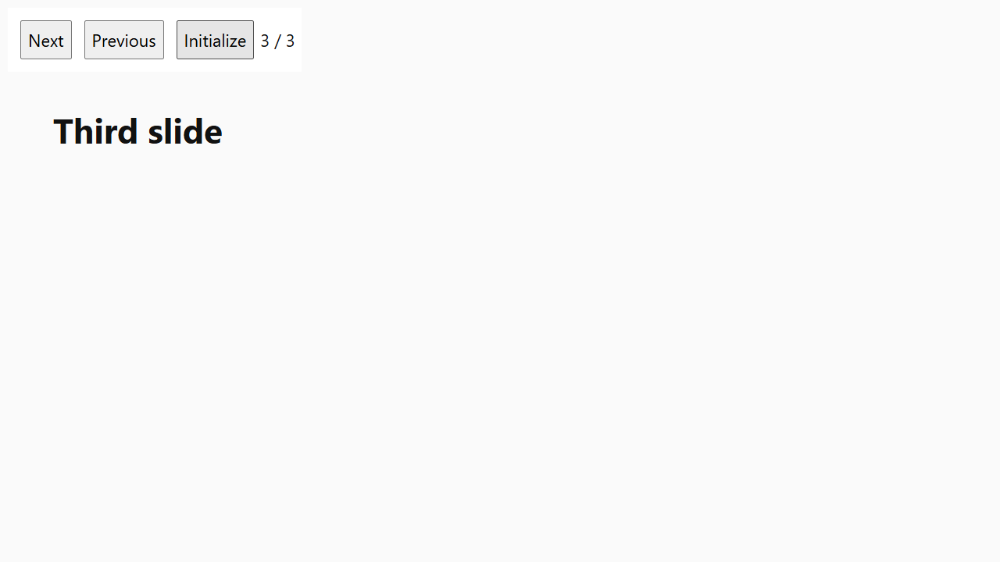

Verdict
Proven, unchecked2 of 2 phases as expected
The bug reproduced and the fix works. No wrong fix was supplied, so the verifier's sensitivity is unchecked.
- red failed and green passed; no break build, so sensitivity is unchecked
Subject
- Run from
- https://github.com/Master07/attest.git
- App
- examples/heldout/app
- Red
- ho/p3/b2/base @ 1817fd6
- Green
- ho/C09/candidate @ 33801dc
- verifier
- Muse Spark 1.3 Meta Model API · muse-spark-1.3
- judge
- Muse Spark Open Baseten · meta-models/muse-spark-open open weights
Acceptance criteria · human-approved
- reinitialise-keeps-current-status
- Given
- The presentation is open on the slide headed "First slide", and the status text next to the buttons reads "1 / 3".
- When
- The user clicks the "Next" button twice (the status reads "3 / 3" and the slide headed "Third slide" is visible), then clicks the "Initialize" button and waits.
- Then
- The status text still reads "3 / 3" and the slide headed "Third slide" is still the visible slide.
- status-correct-after-subsequent-navigation
- Given
- The presentation is on the slide headed "Third slide" after the "Initialize" button was clicked.
- When
- The user clicks the "Previous" button once and waits for the slide to settle.
- Then
- The slide headed "Second slide" is visible and the status text reads "2 / 3".
The proof
Red · Original code — the bug should reproduce
ho/p3/b2/base @ 1817fd6
expected fail · observed fail
✓ as expected
reinitialise-keeps-current-status
Verifier · Muse Spark 1.3fail
Code checksnot applicable
Element checknot applicable
Judge · Muse Spark Openfail
Verifier sawAfter clicking Initialize the Third slide remained visible but status read 1 / 3 instead of 3 / 3.
Other voters
- Judge (meta-models/muse-spark-open): fail — Frame 4 is first frame after Initialize and shows Third slide still visible but status has changed to 1 / 3 not 3 / 3.
status-correct-after-subsequent-navigation
Verifier · Muse Spark 1.3pass
Code checksnot applicable
Element checknot applicable
Judge · Muse Spark Openpass
Verifier sawAfter clicking Previous the Second slide was visible and status read 2 / 3.
Other voters
- Judge (meta-models/muse-spark-open): pass — Frame 4 shows Third slide after Initialize and Frame 5 after clicking Previous shows Second slide with status 2 / 3 as required.
What the verifier did, step by step 4 steps
- 0open the app

- 1click (58, 50) → landed on button#nextwaitlook at the screen
- 2click (58, 48) → landed on button#nextwaitlook at the screen

- 3click (276, 50) → landed on button#restartwaitlook at the screen
- 4click (156, 50) → landed on button#prevwaitlook at the screen
Green · The fix — the criteria should pass
ho/C09/candidate @ 33801dc
expected pass · observed pass
✓ as expected
reinitialise-keeps-current-status
Verifier · Muse Spark 1.3pass
Code checksnot applicable
Element checknot applicable
Judge · Muse Spark Openpass
Verifier sawAfter clicking Initialize, the Third slide remained visible and status read 3 / 3.
Other voters
- Judge (meta-models/muse-spark-open): pass — Frame 4 immediately after Initialize still shows Third slide with status 3 / 3, matching the required preservation of state.

status-correct-after-subsequent-navigation
Verifier · Muse Spark 1.3pass
Code checksnot applicable
Element checknot applicable
Judge · Muse Spark Openpass
Verifier sawAfter clicking Previous, the Second slide was visible and status read 2 / 3.
Other voters
- Judge (meta-models/muse-spark-open): pass — Frame 5 after clicking Previous shows Second slide with status 2 / 3, indicating navigation remains correct after reinitialization.


Check this receipt yourself
What attest verify checks — no model calls
- The Ed25519 signature over the receipt
- The hash-chained event log, its head and its length
- The hash of every screenshot, video and the criteria copy
- That the verdict follows from the recorded votes
What a receipt does not prove
- That the capture environment was honest — it shows nothing changed after capture; the signature detects a later edit
- Who ran it — the key is created on the machine that ran the proof
- Anything beyond the stated criteria